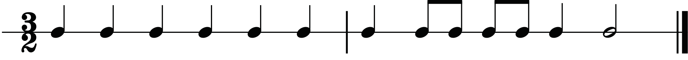
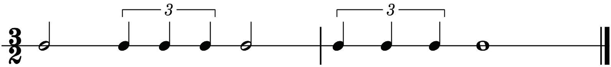
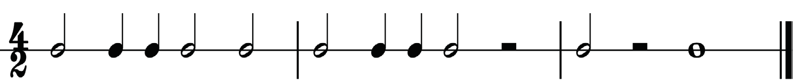
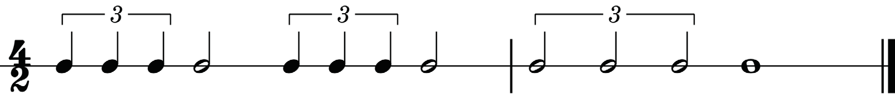

One - and two - and three - and
One - and - a two - da - and three
Ta - te ta - te ta - te
Ta - te -fe ta -fa - te ta
Clap clap clap
Clap clap clap

One
two - trip - let three
One - trip - let two (three)
Ta
ta - ke - ti ta
Ta - ke - ti ta - a
Clap clap clap
Clap clap
A four-two time signature
There are four minim beats in each bar when counting a rhythm in four-two time. Therefore, you will count the beats from one to four in each bar keeping in mind that the value of one beat is a minim. The examples in figures 1.26 and 1.27 show how to count aloud rhythms in four-two time while clapping the main beats.

One two-and Three four
One two-and Three (four)
One (two) Three (four)
Ta ta - te Ta ta
Ta ta - te Ta (ta)
Ta (ta) Ta - a
Clap clap Clap clap
Clap clap Clap
Clap Clap

One-trip-let two
Three - trip- let four
One - trip - let Three (four)
Ta – ke - ti ta
Ta - ke - ti ta
Ta - ke - ti Ta - a
Clap clap
Clap clap
Clap Clap